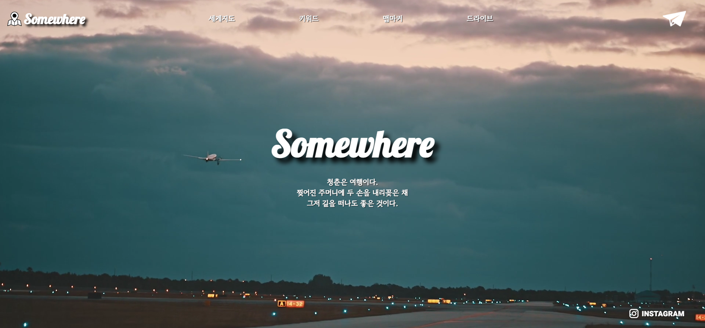

Somewhere
여행 정보 플랫폼을 개발했습니다. 해외여행을 계획할 때 유용한 정보들을 미리 확인 해볼 수 있는 여행 정보 사이트입니다. 세계지도로 나라별 안전 단계를 알 수 있는 기능, SNS 키워드를 통해 많이 검색 된 여행지와 정보들을 확인 해볼 수 있는 기능, 맵 마커를 통한 전 세계 한국인 관광객 수를 알아보는 기능, 나라별로 드라이브 체험을 할 수 있는 기능이 있고 이와 같은 기능들을 종합하여 얻은 정보로 사용자가 원하는 여행지를 찾을 수 있도록 하는 것이 이 프로젝트의 목표입니다.